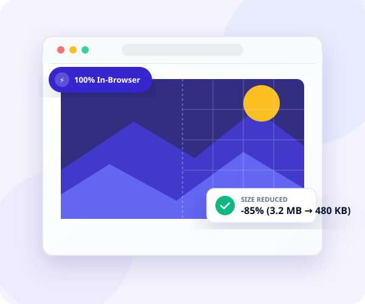

CutImage
Local, Secure, Fast Image Processing. The professional-grade utility for creators who value privacy and performance.
Powerful Tools, Zero Uploads
Everything happens in your browser. Fast, private, and always available.
Compress
Reduce file size without sacrificing quality. Smart optimization for JPEG, PNG, and WebP.
Convert
Switch between formats instantly. Support for modern types including AVIF and JPEG XL.
Crop
Precision cropping with preset aspect ratios for social media and web standards.
Resize
Bulk resize images by percentage or pixel dimension with high-quality resampling.
Favicon
Generate a full suite of favicons for all platforms from a single image upload.
Trace
Transform raster images into scalable vector graphics (SVG) with clean paths.

Why Choose CutImage?
Privacy First
Your data never leaves your device. We use Client-Side WASM technology to process everything locally in your browser. Security isn't just a feature; it's our foundation.
No Registration
Jump right in — no account, no email, no sign-up required. Just drag, drop, and process. Your privacy starts the moment you arrive, not after you create an account.
No Watermarks
Your results are yours — completely clean and unmarked. We never add watermarks, banners, or promotional overlays to your processed images. What you get is what you need.
Instant Speed
Eliminate network latency. By processing locally, we bypass upload and download times, delivering near-instant results even for large batches of high-resolution images.
Free & Private Image Processing
All processing done locally. No data uploaded. Free & Open Source.